| [ Team LiB ] |
|
5.1 MotivationConsider the level control problem first described in Chapter 1 and shown in Figure 5-1. A level measurement device (usually a differential pressure cell) senses the level and sends a signal to the controller. Notice that the controller is comparing the tank height with the desired setpoint and sending a controller output (pressure signal) to the valve, which changes the valve position and therefore the volumetric flow rate of stream 1, F1. These signals are shown as dashed lines on the figure. Figure 5-1. Level control, inlet flow rate manipulated. The instrumentation signals are shown as dashed lines. The level transmitter sends a signal to the level control, which sends a signal to the control valve.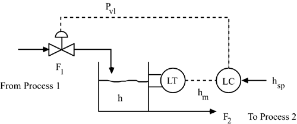 The question is, what is the control algorithm? How does the controller change the flow rate to the process? You can probably think of a number of possible algorithms. On-Off ControlAn on/off controller is similar to a controller used in a typical home heating unit. If the liquid level is too high (higher than the desired setpoint), the valve is closed and if the level is too low (lower than the desired setpoint) the valve is fully opened. The problem with an on-off strategy is that the valve will constantly be opening and closing, as shown in Figure 5-2, causing wear and tear on the valve. Figure 5-2. On-off control of tank height.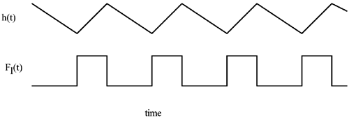 Notice that an on-off controller is based on the error between the setpoint (desired height, hsp) and the measured output (measured height). If the error (hsp – hm) is greater than a certain positive value (d, 1/2 the dead band), the valve is turned off; if the error is less than a certain negative value (–1/2 the dead band), the valve is turned on. Assume that an increase in valve top pressure increases the flow through the valve [this is known as an air-to-open (or fail-closed) valve]. A fail-closed valve is used to make certain that the tank does not overflow in the event of a control valve failure. The algorithm could be stated 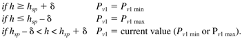 We see that the controller behavior is periodic, as shown in Figure 5-2. The next option is to make the signal to the valve proportional to the difference between the desired level and the actual level. This is known as a proportional controller (or P-controller) and is discussed below. Proportional ControlThe following equation suggests a control action that is proportional to the error (difference between setpoint and measurement), 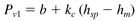 where b is the bias term, kc is the proportional gain (a tuning parameter), and the difference between the setpoint and the measured output is the error 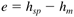 If the error is 0 at steady state, notice that the bias term is equal to the steady-state valve-top pressure. Now we discuss the adjustment of the tuning parameter (proportional gain, kc). Consider the case where the error is positive (setpoint is greater than the measured output). This indicates that the flow rate entering the tank should be higher and therefore the valve-top pressure should increase. The proportional gain, kc, must then be positive, for the control strategy shown in Figure 5-1. As kc is increased, more control action is requested for a given amount of error. Now consider the control strategy shown in Figure 5-3. A similar proportional control algorithm is 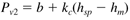 Figure 5-3. Level control with outlet flow rate manipulated.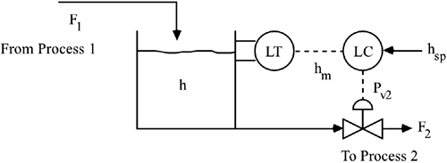 In this case we assume that the valve is fail-open (or air-to-close), since we desire that the tank not overflow in the event of a control valve (or instrument air) failure. Now we rationalize the adjustment of the tuning parameter. Consider the case where the error is positive (height setpoint is greater than the measured height). This indicates that the flow rate leaving the tank should be lower and that the pressure to the valve should increase. The proportional gain, kc, must also be positive for the system in Figure 5-3. Relationship between kpkv and kcRecall that the process gain is simply the steady-state change in output for a steady-state change in process input. 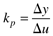 For the first strategy, the process gain is positive; that is, an increase in F1 causes an increase in h. 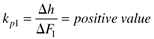 Since the input to the valve is the valve-top pressure (Pv1) and the output of the valve is flow rate, the valve gain is 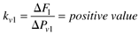 The overall gain between valve-top pressure and tank height is then 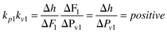 For the second strategy, the process gain is negative (an increase in F2 causes a decrease in h), 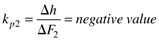 and the valve gain is also negative. The gain between valve-top pressure and tank height is 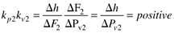 Notice that a process with a positive gain (kp1kv1 or kp2kv2) requires a controller proportional gain that is also positive. Similarly, a process with a negative gain would require a controller proportional gain that is also negative. Valve GainsMost control valves are designed to operate with signals between 3 and 15 psig. A fail-closed valve will be fully closed at 3 psig and fully open at 15 psig. For example, if the maximum flow rate through the valve is 120 gallons per minute (gpm), then the average valve gain is 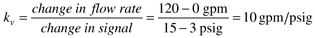 Similarly, a fail-open valve of the same size would have a negative gain (-10 gpm/psig). |
| [ Team LiB ] |
|